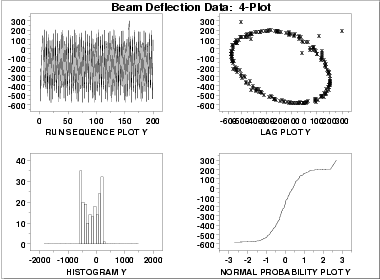
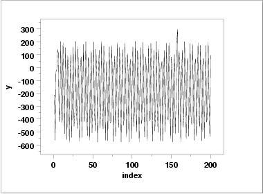
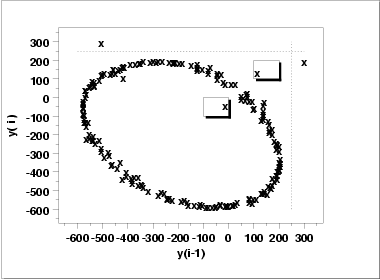
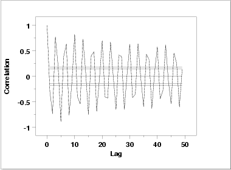
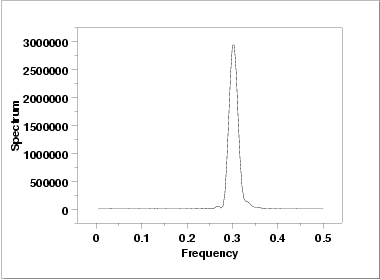

|
1.
Exploratory Data Analysis
1.4. EDA Case Studies 1.4.2. Case Studies 1.4.2.5. Beam Deflections
|
|||
| Goal |
The goal of this analysis is threefold:
|
||
| 4-Plot of Data |  | ||
| Interpretation |
The assumptions are addressed by the graphics shown above:
We need to develop a better model. Non-random data can frequently be modeled using time series mehtodology. Specifically, the circular pattern in the lag plot indicates that a sinusoidal model might be appropriate. The sinusoidal model will be developed in the next section. |
||
| Individual Plots | The plots can be generated individually for more detail. In this case, only the run sequence plot and the lag plot are drawn since the distributional plots are not meaningful. | ||
| Run Sequence Plot |  | ||
| Lag Plot |

We have drawn some lines and boxes on the plot to better isolate the outliers. The following data points appear to be outliers based on the lag plot.
INDEX Y(i-1) Y(i)
158 -506.00 300.00
157 300.00 201.00
3 -15.00 -35.00
5 115.00 141.00
That is, the third, fifth, 157th, and 158th points appear to be outliers.
|
||
| Autocorrelation Plot |
When the lag plot indicates significant non-randomness, it can be
helpful to follow up with a an
autocorrelation plot.
 This autocorrelation plot shows a distinct cyclic pattern. As with the lag plot, this suggests a sinusoidal model. |
||
| Spectral Plot |
Another useful plot for non-random data is the
spectral plot.
 This spectral plot shows a single dominant peak at a frequency of 0.3. This frequency of 0.3 will be used in fitting the sinusoidal model in the next section. |
||
| Quantitative Results | Although the lag plot, autocorrelation plot, and spectral plot clearly show the violation of the randomness assumption, we supplement the graphical output with some quantitative measures. | ||
| Summary Statistics |
As a first step in the analysis, summary statistics are
computed from the data.
Sample size = 200
Mean = -177.4350
Median = -162.0000
Minimum = -579.0000
Maximum = 300.0000
Range = 879.0000
Stan. Dev. = 277.3322
|
||
| Location |
One way to quantify a change in location over time is to
fit a straight line
to the data set using the index variable X = 1, 2, ..., N, with N
denoting the number of observations. If there is no significant drift
in the location, the slope parameter should be zero.
Coefficient Estimate Stan. Error t-Value
A0 -178.175 39.47 -4.514
A1 0.7366E-02 0.34 0.022
Residual Standard Deviation = 278.0313
Residual Degrees of Freedom = 198
The slope parameter, A1, has a
t value of 0.022 which
is statistically not significant. This indicates that the slope can
in fact be considered zero.
|
||
| Variation |
One simple way to detect a change in variation is with a
Bartlett test after dividing the
data set into several equal-sized intervals. However, the Bartlett
the non-randomness of this data does not allows us to assume normality,
we use the alternative Levene
test. In partiuclar, we use the Levene test based on the median
rather the mean. The choice of the number of intervals is somewhat
arbitrary, although values of 4 or 8 are reasonable.
H0: σ12 = σ22 = σ32 = σ42
Ha: At least one σi2 is not equal to the others.
Test statistic: W = 0.09378
Degrees of freedom: k - 1 = 3
Sample size: N = 200
Significance level: α = 0.05
Critical value: Fα,k-1,N-k = 2.651
Critical region: Reject H0 if W > 2.651
In this case, the Levene test indicates that the variances
are not significantly different in the four intervals
since the test statistic value, 0.9378, is less than the
critical value of 2.651.
|
||
| Randomness |
A runs test
is used to check for randomness
H0: the sequence was produced in a random manner
Ha: the sequence was not produced in a random manner
Test statistic: Z = 2.6938
Significance level: α = 0.05
Critical value: Z1-α/2 = 1.96
Critical region: Reject H0 if |Z| > 1.96
The absolute value of the test statistic is larger than the critical
value at the 5 % significance level, so
we conclude that the data are not random.
|
||
| Distributional Assumptions | Since the quantitative tests show that the assumptions of constant scale and non-randomness are not met, the distributional measures will not be meaningful. Therefore these quantitative tests are omitted. | ||